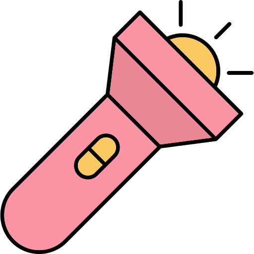

A
Jenis transformasi
Dilatasi
Bayangkan kamu diminta untuk mencetak foto berukuran 2 x 3. Namun tiba tiba saat kamu telah mencetaknya, kamu malah diminta memperbesar ukurannya menjadi 4 x 6.
Klik tombol berikut untuk mengubah ukuran fotonya!

2
3
4
6
Kejadian di atas adalah contoh dilatasi, dimana ukuran foto diubah secara proporsional.
Perhatikan ilustrasi berikut!
Bayangkan kamu mempunyai sebuah senter yang bisa memperbesar ukuran suatu benda


Dilatasi pada transformasi geometri memiliki konsep yang serupa
Dilatasi adalah bentuk transformasi geometri yang mengubah ukuran suatu objek tanpa mengubah bentuknya dengan titik pusat dan skala tertentu
Pusat Dilatasi
Pusat dilatasi adalah titik acuan tetap dimana dilatasi dilakukan. Objek yang dilatasikan bergerak menuju atau menjauhi pusat dan akan tetap proporsional.
Pusat dilatasi bisa berada di dalam objek, juga bisa berada diluar objeknya.

Pusat dilatasi di tengah objek

Pusat dilatasi
di luar objek
Skala Dilatasi
Faktor skala menentukan apakah suatu dilatasi merupakan pembesaran atau pengecilan.
Faktor skala menggambarkan perubahan ukuran pada objek, misalnya:
- Skala 2 artinya objek akan berukuran 2 kali dari ukuran aslinya
- Skala 0.5 atau 1/2 artinya objek akan berukuran setengah dari ukuran aslinya
Kita akan melambangkan faktor skala dengan huruf k. Jika k = 1 maka ukuran objek tidak berubah
Jika k > 1 maka terjadi
pembesaran dan objek menjauh dari
titik pusat

Jika 0 < k < 1 maka terjadi
pengecilan dan objek mendekat dari
titik pusat
Fungsi garis biru di animasi untuk menunjukkan bahwa hasil dilatasi objek proporsional terhada objek aslinya

Tes Pemahaman
TES PERTAMA
Sebuah segitiga didilatasi pada pusat titik P dengan skala 1/2. Manakah animasi yang sesuai?
P
P
P
Reset
TES KEDUA
Segitiga ABCD didilatasi yang pusatnya di titik P dengan skala 2
A
B
D
C
A'
B'
D'
C'
Pilih titik abu abu yang merupakan pusat dilatasi atau Titik P
Reset
Kordinat Dilatasi
Sebelumnya kita hanya melihat sebuah bangun yang didilatasi, apakah bisa jika hanya titik yang didilatasi?
Tentu bisa, dilatasi pada titik tentu tidak membuat tiitknya membesar atau mengecil. Namun dilatasi akan membuat sebuah titik menjauh atau mendekati pusat dilatasi.
Titik A ( 0 , -4 ) didilatasi pada pusat titik P ( 0 , 0 ) dengan skala 1/4

P
A
A'
Diketahui:
Pusat dilatasi adalah titik P ( 0 , 0 ) dengan skala dilatasi 1/4 artinya diperkecil
Catatan:
Dengan skala 1/4, karena hanya titik yang didilatasi maka titik hanya akan mendekat 1/4 dari jarak aslinya
Diperoleh:
Titik A ( 0 , -4 ) didilatasi pada titk P dengan skala 1/4 menghasilkan titik A’ ( 0 , -1 )
Segitiga ABC dengan kordinat A ( 2 , -2 ), B ( 0 , -2 ) , C ( 2 , 0 ) didilatasi pada pusat titik P ( 3 , -3 ) dengan skala 1/4
P
A
B
C
A'
B'
C'
Diketahui:
Pusat dilatasi adalah titik P ( 3 , -3 ) dengan skala dilatasi 2 artinya diperbesar dua kali lipat dan menjauh dari titik pusat
Diperoleh:
Segitiga A'B'C' dengan kordinat A' ( 1 , -1 ), B' ( -3 , -1 ), C' ( 1 , 3)
Tes Pemahaman
TES KETIGA
Terdapat titik A ( -1 , -1 ). Jika titik A didilatasi pada titik ( -2 , -2 ) dengan skala 3, tentukan kordinat titik A'
Klik pada kordinat untuk memunculkan titik lalu cek jawabanmu pada tombol "Check"
TES KEEMPAT
Terdapat segitiga ABC. Segitiga ABC didilatasi pada titik ( 4 , -4 ) dengan skala 2, tentukan kordinat segitiga A'B'C'
Pindahkan titik-titik sudut segitiga hijau hingga membentuk kordinat segitiga A'B'C'